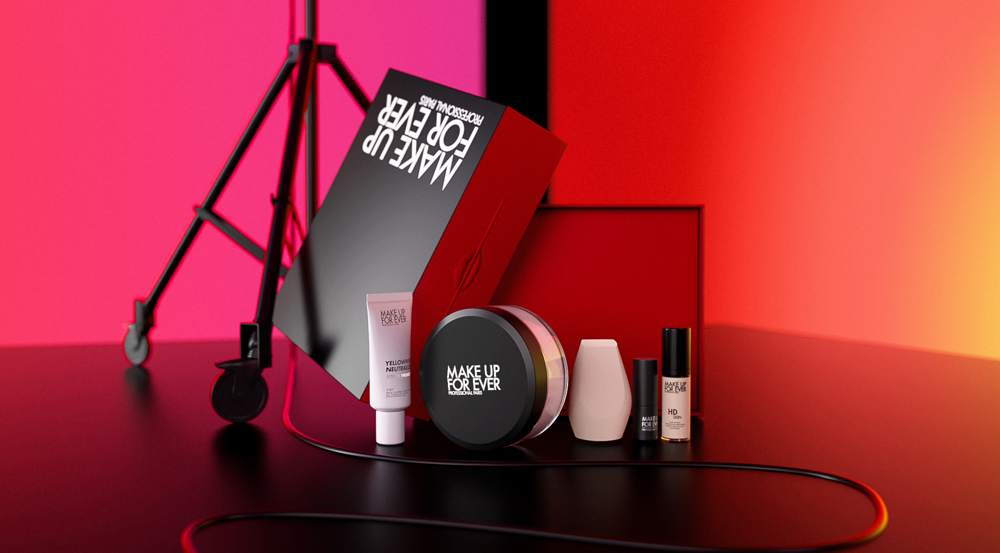
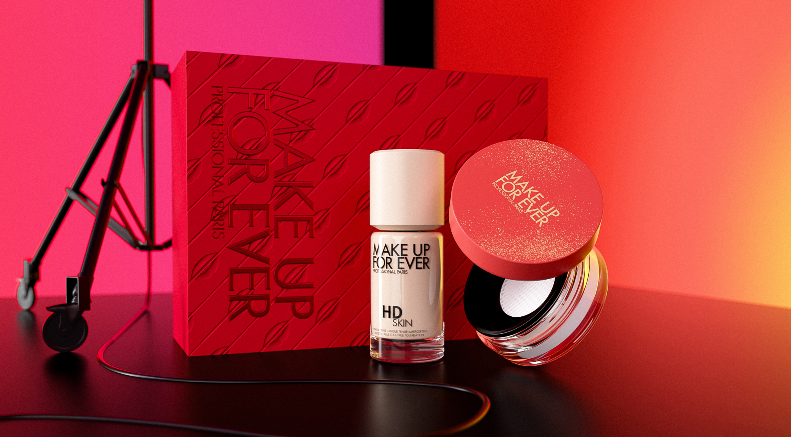
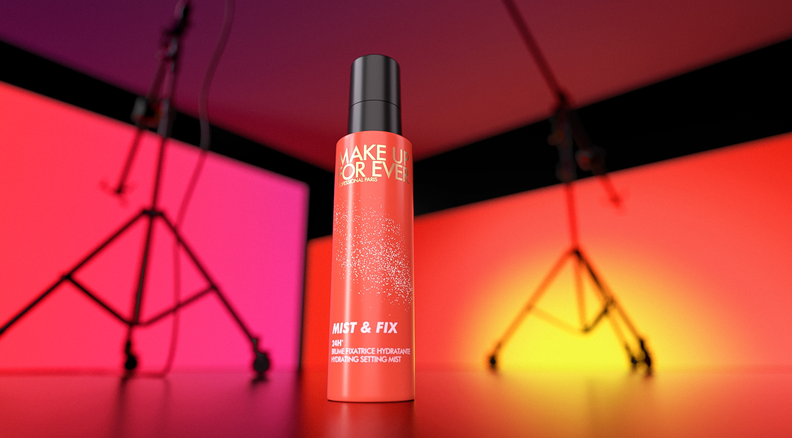
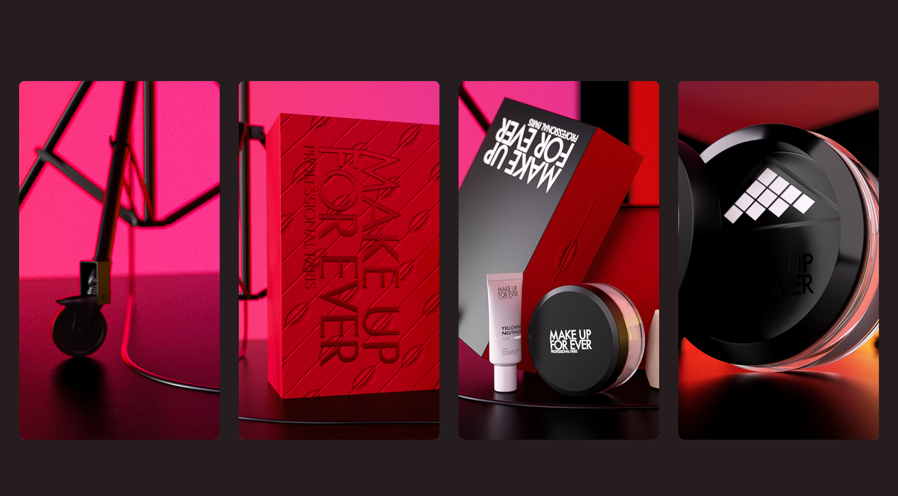
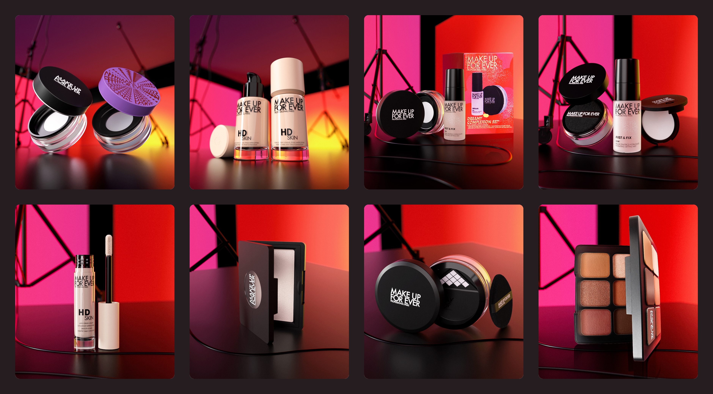
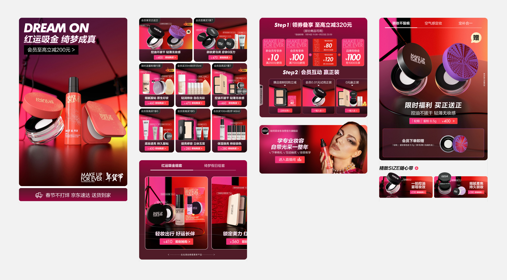
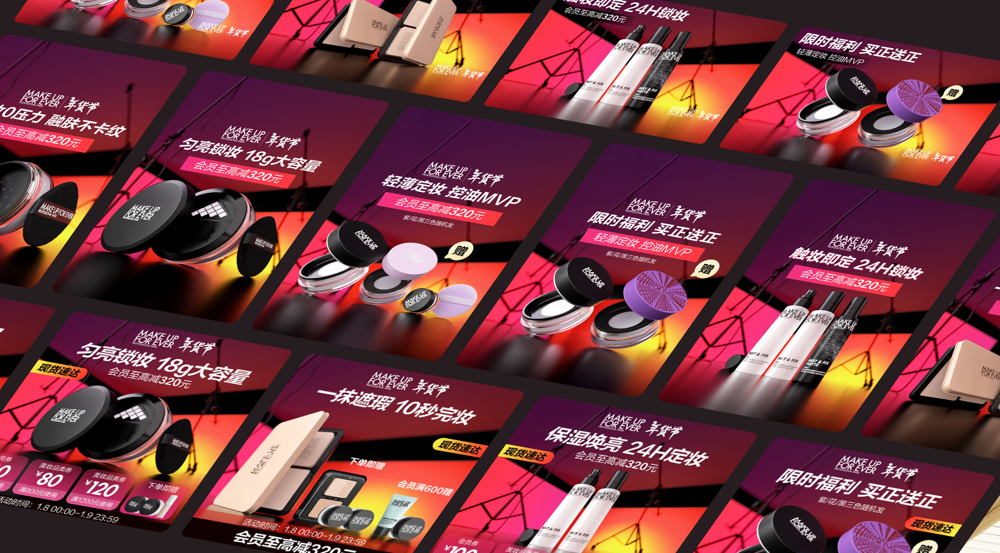
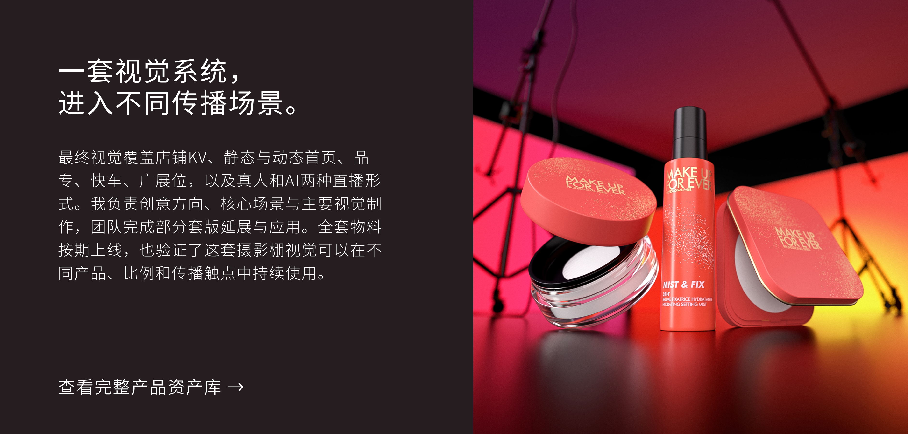

- 角色
- 核心视觉创意与制作
- 负责
- 概念提案、产品与礼盒建模、场景搭建、渲染、后期合成及核心页面视觉
- 协作
- 团队负责部分套版延展与应用制作

从零建立一套年轻化的新年视觉。
玫珂菲没有提供春节素材或既定视觉方向。我从品牌的专业底妆定位出发，独立提出摄影棚概念，并完成核心场景、产品资产与全案视觉基础。

新年节点，需要一套不同于传统春节的表达。
项目需要承接2024年末上市的绮梦系列，通过春节主题延长产品的节点传播周期。但品牌客群更年轻，常见的传统春节元素容易削弱玫珂菲专业、前卫的品牌气质。因此，这次设计的重点不是增加更多节日符号，而是找到春节氛围与品牌定位之间的新连接。

把新年，搬进摄影棚。
“直面4K镜头”的底妆主张，为活动视觉提供了明确线索。我将场景设定在低照度摄影棚中，用背景布、灯架、反光板和线缆建立空间，再以红、橙、黄和亮紫色灯光制造节日氛围。礼盒、限定包装和背景都以红色为主，因此我通过深色基底、边缘光、材质反射和冷暖差拉开层次，让春节的热度与专业彩妆的质感同时成立。

先完成可复用场景，再支持多产品延展。
我独立完成产品与礼盒建模、摄影棚场景搭建、渲染及后期合成，并输出20余张核心场景素材。这些素材不仅用于单张KV，也成为首页、投放与直播视觉的制作基础，让不同产品进入同一活动场景时，仍能保持一致的光影、色彩与空间关系。

从核心场景，延展为完整的活动内容。
在场景资产确定后，我继续完成8张店铺KV，并建立静态与动态两种首页方案。动态首页通过横向切换压缩部分模块长度，在有限屏占内呈现更多产品。团队则在既定视觉系统下，继续完成部分套版延展与应用制作。

统一活动氛围，也要让利益点更快被看见。
快车素材分别尝试了生活化使用场景，以及延续全店视觉并突出优惠券、赠品的方案。根据当时的投放反馈，统一活动氛围并明确呈现利益点的版本，点击表现优于生活化场景方案。这说明在年货节投放中，视觉吸引力需要与优惠信息同时成立。

一套视觉系统，进入不同传播场景。
最终视觉覆盖店铺KV、静态与动态首页、品专、快车、广展位，以及真人和AI两种直播形式。我负责创意方向、核心场景与主要视觉制作，团队完成部分套版延展与应用。全套物料按期上线，也验证了这套摄影棚视觉可以在不同产品、比例和传播触点中持续使用。